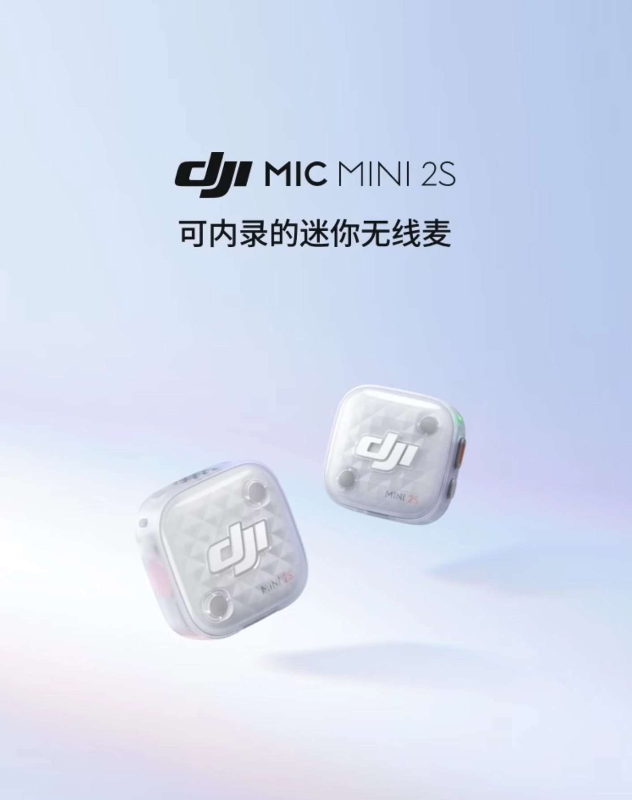
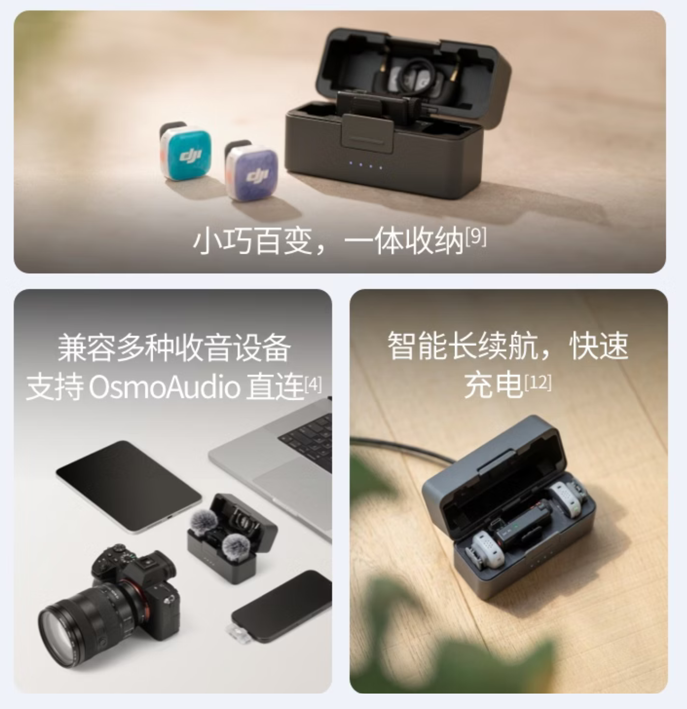
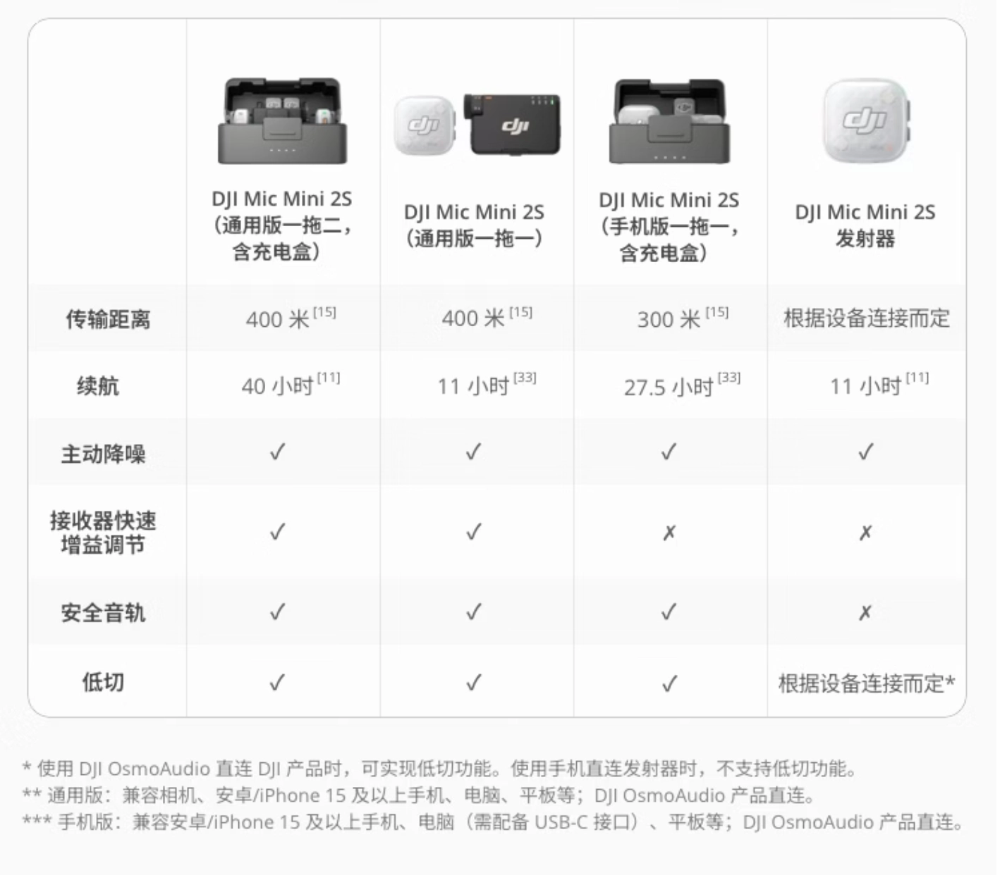

출시 소식
DJI는 오늘 DJI Mic Mini 2S 마이크를 7월 2일 20:00에 출시한다고 발표했습니다.
주요 기능 및 사양
이 신제품은 이미 이커머스 플랫폼에 등록되었으며, "내부 녹음이 가능한 미니 무선 마이크"로 홍보되고 있습니다. 24-bit/32-bit 플로트(float) 내부 녹성을 지원하며, 14.5GB의 내장 저장 공간을 갖추고 있습니다. 또한 모노, 듀얼 채널, 쿼드 채널 모드를 지원합니다.
성능 및 디자인
이 제품은 두 단계의 AI 노이즈 캔슬링을 지원하며, 일반(Normal), 풍부(Full), 밝음(Bright) 세 가지 음색 프리셋을 제공합니다. 최대 전송 거리는 400m이며, 10가지 색상의 교체 가능한 마그네틱 전면 커버가 포함됩니다. 송신기의 무게는 약 12g입니다.
제품 구성
이 신제품은 네 가지 버전으로 선택 가능하며, 현재 가격은 공개되지 않았습니다.
- 범용 버전 카메라 / 휴대폰 1-to-2 (충전 케이스 포함)
- 범용 버전 카메라 / 휴대폰 1-to-1
- 휴대폰 버전 1-to-1 (충전 케이스 포함)
- DJI Mic Mini 2S 송신기
총평
DJI Mic Mini 2S는 내장 저장 공간과 플로트 녹성을 지원하며, 다양한 채널 모드와 AI 노이즈 캔슬링 기능을 갖춘 미니 무선 마이크입니다. 가벼운 무게와 다양한 색상의 커버를 제공하며 네 가지 구성으로 출시될 예정입니다.
发布信息
DJI宣布新款麦克风DJI Mic Mini 2S将于7月2日20:00正式发布。
核心功能与规格
该产品定位为“可内录的迷你无线麦”，具备以下关键技术参数：
- 支持24-bit/32-bit浮点内录
- 内置14.5GB存储空间
- 支持单声道、双声道、四声道模式
- 提供两级AI降噪，并包含常规、饱满、明亮三种音色预设
- 最长传输距离达400m
- 配备10色可替换磁吸前盖
- 发射器重量约12g
产品版本选择
该系列目前提供四种不同配置的版本（价格暂未公布）：
- 通用版相机 / 手机一拖二（含充电盒）
- 通用版相机 / 手机一拖一
- 手机版一拖一（含充电盒）
- DJI Mic Mini 2S 发射器
总结
DJI将于7月2日发布新款DJI Mic Mini 2S无线麦克风。该产品主打轻量化设计、高规格内录功能及AI降噪技术，并提供多种配置版本以适配不同用户需求。
发布信息
DJI宣布将于7月2日20:00正式发布新款无线麦克风 DJI Mic Mini 2S。
核心功能与规格
该产品定位为“可内录的迷你无线麦”，具备以下关键技术参数：
- 支持24-bit/32-bit浮点内录
- 内置14.5GB存储空间
- 支持单声道、双声道、四声道模式
- 配备两级AI降噪功能，并提供常规、饱满、明亮三种音色预设
- 最长传输距离可达400m
- 发射器重量约12g，并配有10色可替换磁吸前盖
产品版本选择
目前该新品提供四种不同配置的版本（价格暂未公布）：
- 通用版相机 / 手机一拖二（含充电盒）
- 通用版相机 / 手机一拖一
- 手机版一拖一（含充电盒）
- DJI Mic Mini 2S 发射器
总结
DJI将于7月2日发布新款 DJI Mic Mini 2S，该产品主打轻量化设计与高规格的32-bit浮点内录功能。它支持长距离传输和AI降噪，并提供多种针对不同使用场景的配置版本。
発売情報
DJIは本日、DJI Mic Mini 2Sを7月2日20:00に発売すると発表しました。
主な機能と仕様
この新製品はすでにECプラットフォームに登録されており、「内部録音が可能なミニワイヤレスマイク」としてプロモーションされています。24-bit/32-bit floatの内部録音をサポートしており、14.5GBの内蔵ストレージを搭載しています。また、モノラル、デュアルチャンネル、クアッドチャンネルの各モードに対応しています。
性能とデザイン
本製品は2段階のAIノイズキャンセリング機能を備えており、Normal、Full、Brightの3種類の音色プリセットを提供します。最大伝送距離は400mで、10色の交換可能なマグネット式フロントカバーが付属します。送信機の重量は約12gと軽量です。
製品構成
この新製品は以下の4つのバージョンから選択可能ですが、現在の価格は公開されていません。
- ユニバーサル版 カメラ/スマートフォン 1-to-2（充電ケース付き）
- ユニバーサル版 カメラ/スマートフォン 1-to-1
- スマートフォン版 1-to-1（充電ケース付き）
- DJI Mic Mini 2S 送信機
まとめ
DJI Mic Mini 2Sは、内蔵ストレージと32-bit float録音に対応した、非常に軽量なワイヤレスマイクです。AIノイズキャンセリングや多彩なチャンネルモードを備え、コンパクトながらも高度な録音機能を求めるユーザーに適した設計となっています。
Release Information
DJI has announced that the DJI Mic Mini 2S will be released on July 2 at 20:00.
Key Features and Specifications
The new product is already listed on e-commerce platforms and is being marketed as a "mini wireless microphone with internal recording." It supports 24-bit/32-bit float internal recording and features 14.5GB of built-in storage. Additionally, it supports Mono, Dual Channel, and Quad Channel modes.
Performance and Design
The device supports two levels of AI noise canceling and provides three tone presets: Normal, Full, and Bright. It features a maximum transmission range of 400m and includes 10 colors of interchangeable magnetic front covers. The transmitter weighs approximately 12g.
Product Configurations
The new product will be available in four different versions; however, the current pricing has not been disclosed.
- Universal Version Camera/Phone 1-to-2 (including charging case)
- Universal Version Camera/Phone 1-to-1
- Phone Version 1-to-1 (including charging case)
- DJI Mic Mini 2S Transmitter
Summary
The DJI Mic Mini 2S is a lightweight wireless microphone featuring internal storage, 32-bit float recording, and multiple channel modes. It includes advanced features like AI noise canceling and customizable magnetic covers, offering various configurations for different user needs.
发布信息
DJI宣布将于7月2日20:00正式发布新款麦克风 DJI Mic Mini 2S。
核心功能与规格
该产品定位为“可内录的迷你无线麦”，具备以下关键技术参数：
- 支持24-bit/32-bit浮点内录
- 内置14.5GB存储空间
- 支持单声道、双声道、四声道模式
- 提供两级AI降噪功能，并包含常规、饱满、明亮三种音色预设
- 最长传输距离为400m
- 发射器重量约12g，配备10色可替换磁吸前盖
产品版本选择
目前该新品提供四种不同配置的版本（价格暂未公布）：
- 通用版相机 / 手机一拖二（含充电盒）
- 通用版相机 / 手机一拖一
- 手机版一拖一（含充电盒）
- DJI Mic Mini 2S 发射器
总结
DJI将于7月2日发布新款 DJI Mic Mini 2S，该产品主打轻量化设计与高品质内录功能。它支持32-bit浮点内录、AI降噪及长距离传输，并提供多种配置版本供用户选择。
発売情報
DJIは、新製品「DJI Mic Mini 2S」を7月2日20:00に発売することを発表しました。
主な機能と仕様
この新製品は「内部録音が可能なミニワイヤレスマイク」として位置付けられており、以下の主要な技術仕様を備えています。
- 24-bit/32-bit floatの内部録音に対応
- 14.5GBの内蔵ストレージを搭載
- モノラル、デュアルチャンネル、クアッドチャンネルモードに対応
性能とデザイン
本製品は2段階のAIノイズキャンセリング機能を備えており、Normal、Full、Brightの3種類の音色プリセットを提供します。最大伝送距離は400mに達し、送信機の重量は約12gと非常に軽量な設計となっています。また、10色のカラーバリエーションから選択可能なマグネット式フロントカバーが付属します。
製品構成
DJI Mic Mini 2Sは以下の4つの構成で展開されます（価格は現在未公開）。
- ユニバーサル版 カメラ/スマートフォン 1-to-2（充電ケース付き）
- ユニバーサル版 カメラ/スマートフォン 1-to-1
- スマートフォン版 1-to-1（充電ケース付き）
- DJI Mic Mini 2S 送信機
まとめ
DJIは7月2日に、32-bit floatの内部録音とAIノイズキャンセリング機能を備えた超軽量ワイヤレスマイク「DJI Mic Mini 2S」を発表します。最大400mの伝送距離と多彩な構成オプションを備え、機動性と高音質を両立した設計となっています。
Release Information
DJI has announced that the new DJI Mic Mini 2S will be officially released on July 2 at 20:00.
Key Features and Specifications
Marketed as a "mini wireless microphone with internal recording," the device is already listed on e-commerce platforms. It features high-quality audio capabilities including:
- Support for 24-bit/32-bit float internal recording
- 14.5GB of built-in storage
- Support for Mono, Dual Channel, and Quad Channel modes
Performance and Design
The device is designed for high performance and portability. It features two-stage AI noise canceling and offers three tone presets: Normal, Full, and Bright. The transmitter weighs approximately 12g and includes 10 interchangeable magnetic front covers in various colors. Additionally, it supports a maximum transmission range of up to 400m.
Product Configurations
The DJI Mic Mini 2S will be available in four different configurations (pricing has not yet been disclosed):
- Universal Version Camera/Phone 1-to-2 (including charging case)
- Universal Version Camera/Phone 1-to-1
- Phone Version 1-to-1 (including charging case)
- DJI Mic Mini 2S Transmitter
Summary
The DJI Mic Mini 2S is a lightweight wireless microphone featuring 32-bit float internal recording, built-in storage, and AI noise canceling. It offers various configuration options and high-quality audio modes to suit different recording needs.



